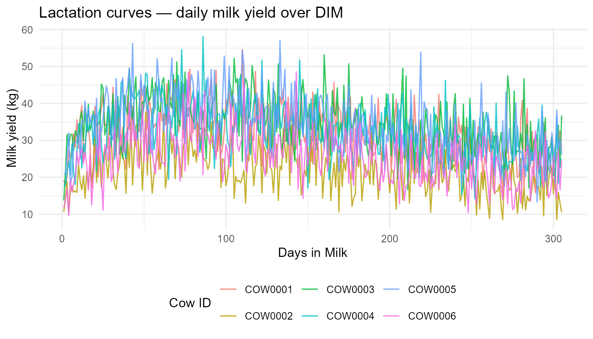
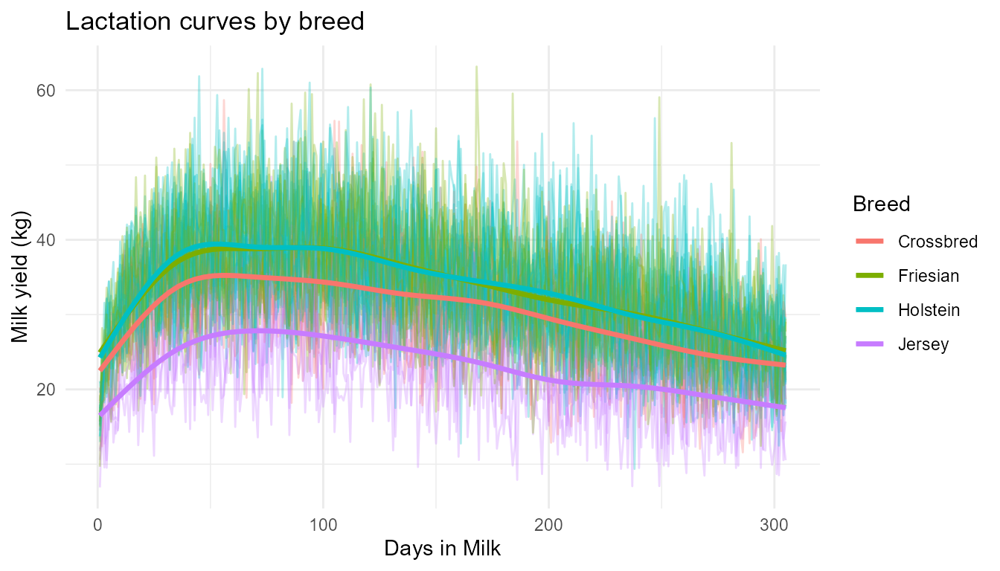
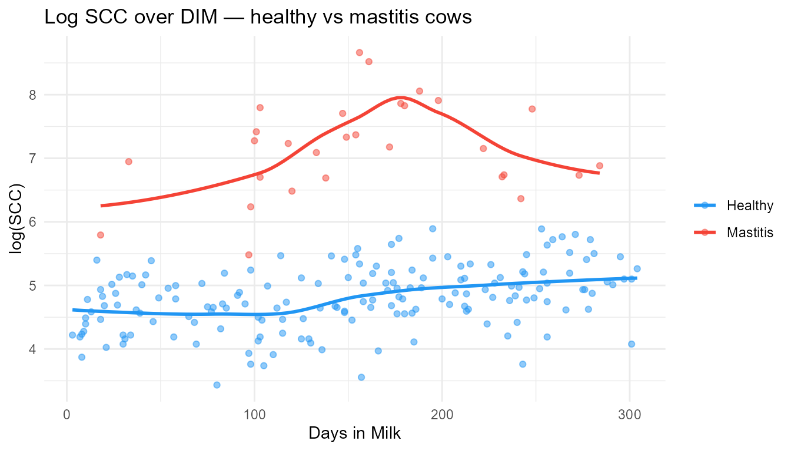
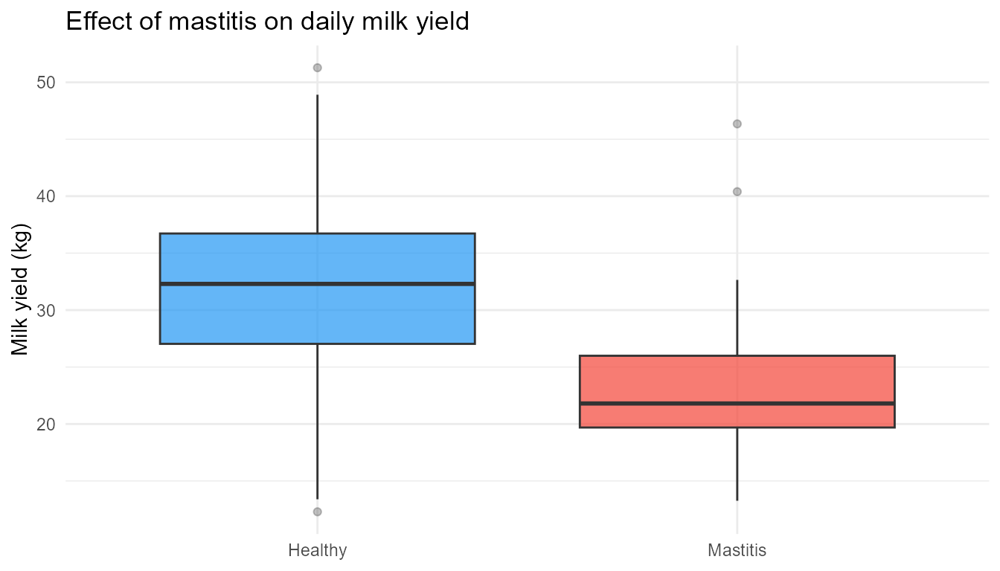
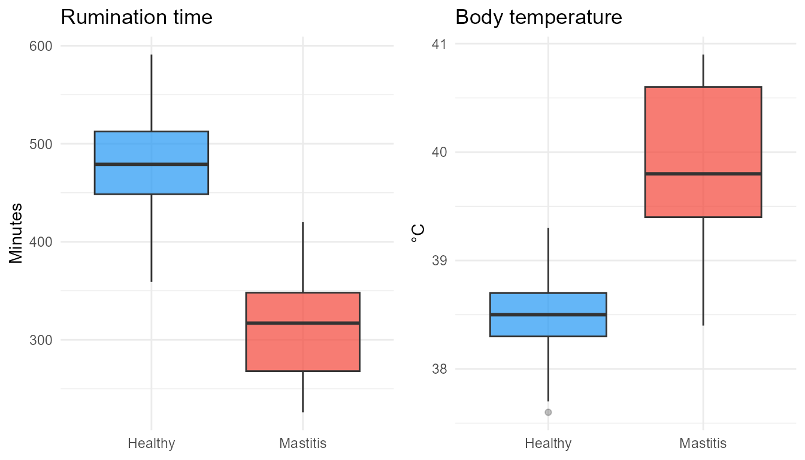
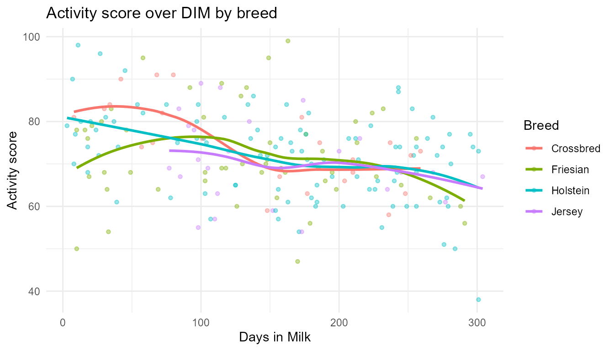
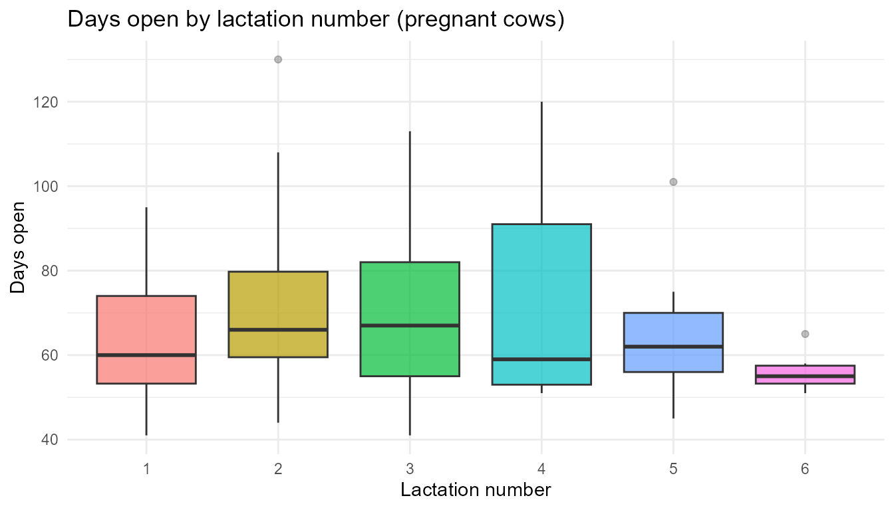

VirtualDairyHerdR generates biologically realistic synthetic dairy herd data for teaching statistics, data wrangling, visualisation, and machine learning in precision livestock farming contexts.
The simulation pipeline
simulate_farm()
└── simulate_herd()
├── simulate_milk()
│ ├── simulate_mastitis()
│ └── simulate_fertility()
└── simulate_activity()Step 1 — Build the herd
farm <- simulate_farm(name = "Greenfield Farm", n_cows = 200, seed = 42)
herd <- simulate_herd(farm = farm)
milk <- simulate_milk(herd, seed = 42)
health <- simulate_mastitis(milk, prevalence = 0.15, seed = 42)
fert <- simulate_fertility(milk, seed = 42)
activity <- simulate_activity(herd, seed = 42)Visualisation
Lactation curve — milk yield over DIM
Using longitudinal = TRUE to generate a full time series
(one row per cow per DIM), then plotting the Wood’s curve for a sample
of cows.
herd_long <- simulate_herd(n_cows = 30, longitudinal = TRUE, seed = 42)
milk_long <- simulate_milk(herd_long, seed = 42)
# Sample 6 cows for clarity
sample_cows <- unique(milk_long$cow_id)[1:6]
milk_long |>
dplyr::filter(cow_id %in% sample_cows) |>
ggplot(aes(x = days_in_milk, y = milk_kg, colour = cow_id)) +
geom_line(alpha = 0.8) +
labs(
title = "Lactation curves — daily milk yield over DIM",
x = "Days in Milk",
y = "Milk yield (kg)",
colour = "Cow ID"
) +
theme_minimal() +
theme(legend.position = "bottom")
Breed-level lactation curves
milk_long |>
ggplot(aes(x = days_in_milk, y = milk_kg, colour = breed, group = cow_id)) +
geom_line(alpha = 0.3) +
stat_smooth(aes(group = breed), se = FALSE, linewidth = 1.2) +
labs(
title = "Lactation curves by breed",
x = "Days in Milk",
y = "Milk yield (kg)",
colour = "Breed"
) +
theme_minimal()
SCC over DIM — healthy vs mastitis cows
health |>
ggplot(aes(x = days_in_milk, y = log(scc), colour = mastitis)) +
geom_point(alpha = 0.5, size = 1.5) +
geom_smooth(se = FALSE) +
scale_colour_manual(
values = c("FALSE" = "#2196F3", "TRUE" = "#F44336"),
labels = c("Healthy", "Mastitis")
) +
labs(
title = "Log SCC over DIM — healthy vs mastitis cows",
x = "Days in Milk",
y = "log(SCC)",
colour = NULL
) +
theme_minimal()
Effect of mastitis on milk yield
health |>
ggplot(aes(x = mastitis, y = milk_kg, fill = mastitis)) +
geom_boxplot(alpha = 0.7, outlier.alpha = 0.3) +
scale_fill_manual(
values = c("FALSE" = "#2196F3", "TRUE" = "#F44336"),
labels = c("Healthy", "Mastitis")
) +
scale_x_discrete(labels = c("Healthy", "Mastitis")) +
labs(
title = "Effect of mastitis on daily milk yield",
x = NULL,
y = "Milk yield (kg)"
) +
theme_minimal() +
theme(legend.position = "none")
Mastitis effect on rumination and temperature
p1 <- ggplot(health, aes(x = mastitis, y = rumination_minutes, fill = mastitis)) +
geom_boxplot(alpha = 0.7, outlier.alpha = 0.3) +
scale_fill_manual(values = c("FALSE" = "#2196F3", "TRUE" = "#F44336")) +
scale_x_discrete(labels = c("Healthy", "Mastitis")) +
labs(title = "Rumination time", x = NULL, y = "Minutes") +
theme_minimal() +
theme(legend.position = "none")
p2 <- ggplot(health, aes(x = mastitis, y = temperature, fill = mastitis)) +
geom_boxplot(alpha = 0.7, outlier.alpha = 0.3) +
scale_fill_manual(values = c("FALSE" = "#2196F3", "TRUE" = "#F44336")) +
scale_x_discrete(labels = c("Healthy", "Mastitis")) +
labs(title = "Body temperature", x = NULL, y = "°C") +
theme_minimal() +
theme(legend.position = "none")
gridExtra::grid.arrange(p1, p2, ncol = 2)
Activity score over DIM
activity |>
ggplot(aes(x = days_in_milk, y = activity_score, colour = breed)) +
geom_point(alpha = 0.4, size = 1.2) +
geom_smooth(se = FALSE) +
labs(
title = "Activity score over DIM by breed",
x = "Days in Milk",
y = "Activity score",
colour = "Breed"
) +
theme_minimal()
Fertility — days open by lactation number
fert |>
dplyr::filter(pregnant) |>
ggplot(aes(x = factor(lactation), y = days_open, fill = factor(lactation))) +
geom_boxplot(alpha = 0.7, outlier.alpha = 0.3) +
labs(
title = "Days open by lactation number (pregnant cows)",
x = "Lactation number",
y = "Days open"
) +
theme_minimal() +
theme(legend.position = "none")
Mixed models with lme4
Using lme4::lmer() to account for the repeated-measures
structure of the longitudinal data. Each model includes a random
intercept for cow_id.
library(lme4)
milk_long_full <- simulate_milk(herd_long, seed = 42)
health_long <- simulate_mastitis(milk_long_full, prevalence = 0.15, seed = 42)
fert_long <- simulate_fertility(milk_long_full, seed = 42)Model 1 — Milk yield ~ DIM + breed + lactation
Does breed and parity explain variation in milk yield after accounting for stage of lactation?
m1 <- lmer(milk_kg ~ days_in_milk + breed + lactation + (1 | cow_id),
data = milk_long_full)
summary(m1)
#> Linear mixed model fit by REML ['lmerMod']
#> Formula: milk_kg ~ days_in_milk + breed + lactation + (1 | cow_id)
#> Data: milk_long_full
#>
#> REML criterion at convergence: 61466.5
#>
#> Scaled residuals:
#> Min 1Q Median 3Q Max
#> -4.3708 -0.6705 -0.0291 0.6323 4.3279
#>
#> Random effects:
#> Groups Name Variance Std.Dev.
#> cow_id (Intercept) 0.4199 0.648
#> Residual 48.1459 6.939
#> Number of obs: 9150, groups: cow_id, 30
#>
#> Fixed effects:
#> Estimate Std. Error t value
#> (Intercept) 38.0154321 0.5041004 75.412
#> days_in_milk -0.0328224 0.0008239 -39.839
#> breedFriesian 3.2668361 0.4654685 7.018
#> breedHolstein 3.1201598 0.4320716 7.221
#> breedJersey -5.7261529 0.5588631 -10.246
#> lactation -0.8030836 0.0874992 -9.178
#>
#> Correlation of Fixed Effects:
#> (Intr) dys_n_ brdFrs brdHls brdJrs
#> days_in_mlk -0.250
#> breedFriesn -0.616 0.000
#> breedHolstn -0.707 0.000 0.718
#> breedJersey -0.346 0.000 0.555 0.578
#> lactation -0.608 0.000 0.000 0.072 -0.274Model 2 — log(SCC) ~ mastitis + DIM
Does mastitis status explain SCC after accounting for DIM?
m2 <- lmer(log(scc) ~ mastitis + days_in_milk + (1 | cow_id),
data = health_long)
summary(m2)
#> Linear mixed model fit by REML ['lmerMod']
#> Formula: log(scc) ~ mastitis + days_in_milk + (1 | cow_id)
#> Data: health_long
#>
#> REML criterion at convergence: 14067.8
#>
#> Scaled residuals:
#> Min 1Q Median 3Q Max
#> -4.2192 -0.6580 0.0080 0.6833 3.4692
#>
#> Random effects:
#> Groups Name Variance Std.Dev.
#> cow_id (Intercept) 3.735e-05 0.006111
#> Residual 2.715e-01 0.521058
#> Number of obs: 9150, groups: cow_id, 30
#>
#> Fixed effects:
#> Estimate Std. Error t value
#> (Intercept) 4.512e+00 1.122e-02 402.2
#> mastitisTRUE 2.458e+00 1.500e-02 163.8
#> days_in_milk 1.918e-03 6.187e-05 31.0
#>
#> Correlation of Fixed Effects:
#> (Intr) msTRUE
#> mastitsTRUE -0.206
#> days_in_mlk -0.843 -0.004Model 3 — Days open ~ milk yield + lactation
Does higher milk yield delay conception (the production–fertility antagonism)?
m3 <- lmer(days_open ~ milk_kg + lactation + (1 | cow_id),
data = dplyr::filter(fert_long, pregnant))
summary(m3)
#> Linear mixed model fit by REML ['lmerMod']
#> Formula: days_open ~ milk_kg + lactation + (1 | cow_id)
#> Data: dplyr::filter(fert_long, pregnant)
#>
#> REML criterion at convergence: 36944.4
#>
#> Scaled residuals:
#> Min 1Q Median 3Q Max
#> -1.5748 -0.7762 -0.2727 0.5183 3.3428
#>
#> Random effects:
#> Groups Name Variance Std.Dev.
#> cow_id (Intercept) 7.612 2.759
#> Residual 451.069 21.238
#> Number of obs: 4124, groups: cow_id, 30
#>
#> Fixed effects:
#> Estimate Std. Error t value
#> (Intercept) 47.96332 2.12656 22.554
#> milk_kg 0.64550 0.04381 14.733
#> lactation 0.79396 0.35721 2.223
#>
#> Correlation of Fixed Effects:
#> (Intr) mlk_kg
#> milk_kg -0.765
#> lactation -0.707 0.182Summarising with education_summary()
education_summary(fert, by = "breed")
#> # A tibble: 4 × 10
#> breed n_cows mean_dim mean_milk_kg sd_milk_kg mean_fat_pct mean_protein_pct
#> <chr> <int> <dbl> <dbl> <dbl> <dbl> <dbl>
#> 1 Jersey 24 153. 23.8 6.36 3.83 3.22
#> 2 Friesian 54 135. 34.5 8.39 3.55 3.04
#> 3 Holstein 99 163. 33.1 6.44 3.55 3.05
#> 4 Crossbr… 23 141. 30.5 5.39 3.52 3.1
#> # ℹ 3 more variables: mean_scc <dbl>, conception_rate <dbl>,
#> # mean_days_open <dbl>
education_summary(fert, by = "lactation")
#> # A tibble: 6 × 10
#> lactation n_cows mean_dim mean_milk_kg sd_milk_kg mean_fat_pct
#> <int> <int> <dbl> <dbl> <dbl> <dbl>
#> 1 5 20 142. 30.4 8.11 3.54
#> 2 6 18 165. 29.9 6.85 3.57
#> 3 2 37 175. 30.8 8.08 3.68
#> 4 3 37 131. 33.4 6.73 3.56
#> 5 4 39 150. 31.8 8.84 3.57
#> 6 1 49 150. 33.7 6.6 3.55
#> # ℹ 4 more variables: mean_protein_pct <dbl>, mean_scc <dbl>,
#> # conception_rate <dbl>, mean_days_open <dbl>Reproducibility
a <- simulate_milk(simulate_herd(50, seed = 1), seed = 1)
b <- simulate_milk(simulate_herd(50, seed = 1), seed = 1)
identical(a, b)
#> [1] TRUE